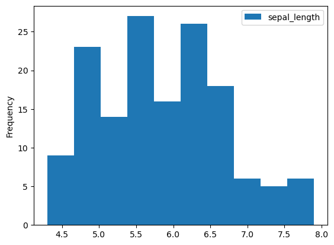
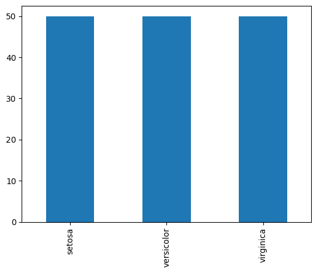
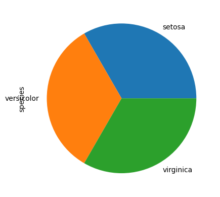
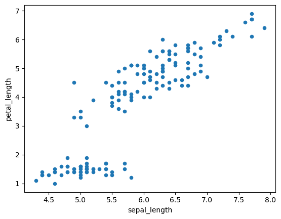
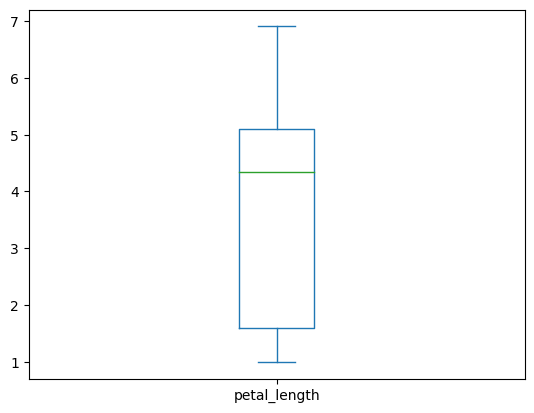
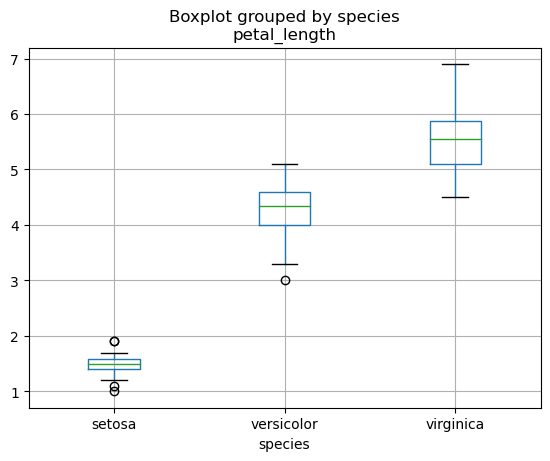

Pandas: Data Exploration#
Pandas is extremely useful for all the steps from data acquisition to analysis. Between these stages, an essential process involves exploring and processing the data to ensure it’s ready for meaningful insights.

In this lesson, you will learn how to use Pandas to get a first idea about your data. Specifically, we will cover:
Use Pandas for data inspection and exploration.
Basic selection, indexing and slicing.
Basic data cleaning.
# import dependencies
import pandas as pd
We will work with the following dataset:
iris_df = pd.read_csv("https://raw.githubusercontent.com/mwaskom/seaborn-data/refs/heads/master/iris.csv")
iris_df
| sepal_length | sepal_width | petal_length | petal_width | species | |
|---|---|---|---|---|---|
| 0 | 5.1 | 3.5 | 1.4 | 0.2 | setosa |
| 1 | 4.9 | 3.0 | 1.4 | 0.2 | setosa |
| 2 | 4.7 | 3.2 | 1.3 | 0.2 | setosa |
| 3 | 4.6 | 3.1 | 1.5 | 0.2 | setosa |
| 4 | 5.0 | 3.6 | 1.4 | 0.2 | setosa |
| ... | ... | ... | ... | ... | ... |
| 145 | 6.7 | 3.0 | 5.2 | 2.3 | virginica |
| 146 | 6.3 | 2.5 | 5.0 | 1.9 | virginica |
| 147 | 6.5 | 3.0 | 5.2 | 2.0 | virginica |
| 148 | 6.2 | 3.4 | 5.4 | 2.3 | virginica |
| 149 | 5.9 | 3.0 | 5.1 | 1.8 | virginica |
150 rows × 5 columns
Check that we have a dataframe:
type(iris_df)
pandas.core.frame.DataFrame
Try it yourself with Practice Exercise 1!
Data Inspection#
Exploring dataframe’s structure#
head(): returns the first records in dataframe.
iris_df.head()
| sepal_length | sepal_width | petal_length | petal_width | species | |
|---|---|---|---|---|---|
| 0 | 5.1 | 3.5 | 1.4 | 0.2 | setosa |
| 1 | 4.9 | 3.0 | 1.4 | 0.2 | setosa |
| 2 | 4.7 | 3.2 | 1.3 | 0.2 | setosa |
| 3 | 4.6 | 3.1 | 1.5 | 0.2 | setosa |
| 4 | 5.0 | 3.6 | 1.4 | 0.2 | setosa |
# You can specify how many rows to show
iris_df.head(10)
| sepal_length | sepal_width | petal_length | petal_width | species | |
|---|---|---|---|---|---|
| 0 | 5.1 | 3.5 | 1.4 | 0.2 | setosa |
| 1 | 4.9 | 3.0 | 1.4 | 0.2 | setosa |
| 2 | 4.7 | 3.2 | 1.3 | 0.2 | setosa |
| 3 | 4.6 | 3.1 | 1.5 | 0.2 | setosa |
| 4 | 5.0 | 3.6 | 1.4 | 0.2 | setosa |
| 5 | 5.4 | 3.9 | 1.7 | 0.4 | setosa |
| 6 | 4.6 | 3.4 | 1.4 | 0.3 | setosa |
| 7 | 5.0 | 3.4 | 1.5 | 0.2 | setosa |
| 8 | 4.4 | 2.9 | 1.4 | 0.2 | setosa |
| 9 | 4.9 | 3.1 | 1.5 | 0.1 | setosa |
tail(): returns the last records in dataframe.
iris_df.tail()
| sepal_length | sepal_width | petal_length | petal_width | species | |
|---|---|---|---|---|---|
| 145 | 6.7 | 3.0 | 5.2 | 2.3 | virginica |
| 146 | 6.3 | 2.5 | 5.0 | 1.9 | virginica |
| 147 | 6.5 | 3.0 | 5.2 | 2.0 | virginica |
| 148 | 6.2 | 3.4 | 5.4 | 2.3 | virginica |
| 149 | 5.9 | 3.0 | 5.1 | 1.8 | virginica |
# Again, we can can specify how many rows to show
iris_df.tail(10)
| sepal_length | sepal_width | petal_length | petal_width | species | |
|---|---|---|---|---|---|
| 140 | 6.7 | 3.1 | 5.6 | 2.4 | virginica |
| 141 | 6.9 | 3.1 | 5.1 | 2.3 | virginica |
| 142 | 5.8 | 2.7 | 5.1 | 1.9 | virginica |
| 143 | 6.8 | 3.2 | 5.9 | 2.3 | virginica |
| 144 | 6.7 | 3.3 | 5.7 | 2.5 | virginica |
| 145 | 6.7 | 3.0 | 5.2 | 2.3 | virginica |
| 146 | 6.3 | 2.5 | 5.0 | 1.9 | virginica |
| 147 | 6.5 | 3.0 | 5.2 | 2.0 | virginica |
| 148 | 6.2 | 3.4 | 5.4 | 2.3 | virginica |
| 149 | 5.9 | 3.0 | 5.1 | 1.8 | virginica |
dtypes: returns the data types of each column.
iris_df.dtypes
sepal_length float64
sepal_width float64
petal_length float64
petal_width float64
species object
dtype: object
shape: As with NumPy, the shape of the dataframe (number of rows, number of columns).
iris_df.shape
(150, 5)
You can also use the built-in funciton len() to obtain the row (record) count.
len(iris_df)
150
columns: contains the column names.
iris_df.columns
Index(['sepal_length', 'sepal_width', 'petal_length', 'petal_width',
'species'],
dtype='object')
info(): prints information about the dataframe including the index dtype and columns, non-null values and memory usage.
iris_df.info()
<class 'pandas.core.frame.DataFrame'>
RangeIndex: 150 entries, 0 to 149
Data columns (total 5 columns):
# Column Non-Null Count Dtype
--- ------ -------------- -----
0 sepal_length 150 non-null float64
1 sepal_width 150 non-null float64
2 petal_length 150 non-null float64
3 petal_width 150 non-null float64
4 species 150 non-null object
dtypes: float64(4), object(1)
memory usage: 6.0+ KB
Try it yourself with Practice Exercise 2!
Summarizing data#
describe(): summarizes the central tendency (i.e. mean), dispersion (i.e. standard deviation) and shape of a dataset’s distribution.
iris_df.describe()
| sepal_length | sepal_width | petal_length | petal_width | |
|---|---|---|---|---|
| count | 150.000000 | 150.000000 | 150.000000 | 150.000000 |
| mean | 5.843333 | 3.057333 | 3.758000 | 1.199333 |
| std | 0.828066 | 0.435866 | 1.765298 | 0.762238 |
| min | 4.300000 | 2.000000 | 1.000000 | 0.100000 |
| 25% | 5.100000 | 2.800000 | 1.600000 | 0.300000 |
| 50% | 5.800000 | 3.000000 | 4.350000 | 1.300000 |
| 75% | 6.400000 | 3.300000 | 5.100000 | 1.800000 |
| max | 7.900000 | 4.400000 | 6.900000 | 2.500000 |
# if you prefer the columns in the rows
iris_df.describe().T
| count | mean | std | min | 25% | 50% | 75% | max | |
|---|---|---|---|---|---|---|---|---|
| sepal_length | 150.0 | 5.843333 | 0.828066 | 4.3 | 5.1 | 5.80 | 6.4 | 7.9 |
| sepal_width | 150.0 | 3.057333 | 0.435866 | 2.0 | 2.8 | 3.00 | 3.3 | 4.4 |
| petal_length | 150.0 | 3.758000 | 1.765298 | 1.0 | 1.6 | 4.35 | 5.1 | 6.9 |
| petal_width | 150.0 | 1.199333 | 0.762238 | 0.1 | 0.3 | 1.30 | 1.8 | 2.5 |
By default, if the dataframe contains mixed type data (numeric and categorical), it will summarize only the numeric data.
If you want to summarize the categorical data, this needs to happen separately.
iris_df[["species"]].describe()
| species | |
|---|---|
| count | 150 |
| unique | 3 |
| top | setosa |
| freq | 50 |
iris_df.sepal_length.describe()
count 150.000000
mean 5.843333
std 0.828066
min 4.300000
25% 5.100000
50% 5.800000
75% 6.400000
max 7.900000
Name: sepal_length, dtype: float64
value_counts(): returns the frequency for each distinct value. Arguments give the ability to sort by count or index, normalize, and more. Look at its documentation for further details.
iris_df.species.value_counts()
setosa 50
versicolor 50
virginica 50
Name: species, dtype: int64
Show percentages instead of counts
iris_df.species.value_counts(normalize=True)
setosa 0.333333
versicolor 0.333333
virginica 0.333333
Name: species, dtype: float64
corr(): returns the correlation between numeric columns.
iris_df.corr()
/tmp/ipykernel_17540/1934569051.py:1: FutureWarning: The default value of numeric_only in DataFrame.corr is deprecated. In a future version, it will default to False. Select only valid columns or specify the value of numeric_only to silence this warning.
iris_df.corr()
| sepal_length | sepal_width | petal_length | petal_width | |
|---|---|---|---|---|
| sepal_length | 1.000000 | -0.117570 | 0.871754 | 0.817941 |
| sepal_width | -0.117570 | 1.000000 | -0.428440 | -0.366126 |
| petal_length | 0.871754 | -0.428440 | 1.000000 | 0.962865 |
| petal_width | 0.817941 | -0.366126 | 0.962865 | 1.000000 |
Correlation can be computed on two fields by subsetting on them:
iris_df[['sepal_length','petal_length']].corr()
| sepal_length | petal_length | |
|---|---|---|
| sepal_length | 1.000000 | 0.871754 |
| petal_length | 0.871754 | 1.000000 |
iris_df[['sepal_length','petal_length','sepal_width']].corr()
| sepal_length | petal_length | sepal_width | |
|---|---|---|---|
| sepal_length | 1.000000 | 0.871754 | -0.11757 |
| petal_length | 0.871754 | 1.000000 | -0.42844 |
| sepal_width | -0.117570 | -0.428440 | 1.00000 |
Try it yourself with Practice Exercise 3!
Visualizing data#
Pandas dataframes have a plot method, which enables quick data visualization.
This method is built on Matplotlib, the primary library for creating visualizations in Python. Another important library for this purpose is Seaborn, which works seamlessly with DataFrames and produces professional, visually appealing results.
# hist to display continuous data
iris_df.plot(y="sepal_length", kind="hist")
<Axes: ylabel='Frequency'>

# barplots to show categorical data
iris_df.species.value_counts().plot(kind="bar")
<Axes: >

# or a pie chart
iris_df.species.value_counts().plot(kind="pie")
<Axes: ylabel='species'>

# scatterplots to display the relation between continuous data
iris_df.plot(x="sepal_length", y="petal_length", kind="scatter")
<Axes: xlabel='sepal_length', ylabel='petal_length'>

The relationship between a categorical and a continuous variable is often visualized using a boxplot.
iris_df.plot(x="species", y="petal_length", kind="box")
<Axes: >

But this does not work as expected… We have to use boxplot:
iris_df.boxplot("petal_length", by="species")
<Axes: title={'center': 'petal_length'}, xlabel='species'>

Try it yourself with Practice Exercise 4!
Basic Indexing and Selection#
Quick access to columns by name#
Bracket notation: As in dictionaries, use
[](single or double; see below), and inside the name of the column(s), which must be a string.
# Single brackets give a series
iris_df['sepal_length'], type(iris_df['sepal_length'])
(0 5.1
1 4.9
2 4.7
3 4.6
4 5.0
...
145 6.7
146 6.3
147 6.5
148 6.2
149 5.9
Name: sepal_length, Length: 150, dtype: float64,
pandas.core.series.Series)
# double bracket gives you the selected column as new dataframe
iris_df[['sepal_length']], type(iris_df[['sepal_length']])
( sepal_length
0 5.1
1 4.9
2 4.7
3 4.6
4 5.0
.. ...
145 6.7
146 6.3
147 6.5
148 6.2
149 5.9
[150 rows x 1 columns],
pandas.core.frame.DataFrame)
This notation allows you to select multiple columns. To do this, use double brackets [[.., ..]], ensuring that the returned object is a dataframe:
iris_df[['sepal_length', 'petal_length']]
| sepal_length | petal_length | |
|---|---|---|
| 0 | 5.1 | 1.4 |
| 1 | 4.9 | 1.4 |
| 2 | 4.7 | 1.3 |
| 3 | 4.6 | 1.5 |
| 4 | 5.0 | 1.4 |
| ... | ... | ... |
| 145 | 6.7 | 5.2 |
| 146 | 6.3 | 5.0 |
| 147 | 6.5 | 5.2 |
| 148 | 6.2 | 5.4 |
| 149 | 5.9 | 5.1 |
150 rows × 2 columns
Dot notation: Here columns are object attributes.
iris_df.sepal_length, type(iris_df.sepal_length)
(0 5.1
1 4.9
2 4.7
3 4.6
4 5.0
...
145 6.7
146 6.3
147 6.5
148 6.2
149 5.9
Name: sepal_length, Length: 150, dtype: float64,
pandas.core.series.Series)
Dot notation is very convenient, since as object attributes they can be tab-completed in various editing environments.
But:
It only works if the column names are not reserved keywords.
It can not be used when creating a new column (see below).
It allows you to select just one column.
Selecting Data by Position: iloc[]#
We can use iloc[] to extract rows and columns using indexes.
# This fetches row 3, and all columns:
iris_df.iloc[2]
sepal_length 4.7
sepal_width 3.2
petal_length 1.3
petal_width 0.2
species setosa
Name: 2, dtype: object
# Similar to
iris_df.iloc[2, :]
sepal_length 4.7
sepal_width 3.2
petal_length 1.3
petal_width 0.2
species setosa
Name: 2, dtype: object
fetch rows with indices 1,2 (the right endpoint is exclusive), and all columns.
iris_df.iloc[1:3]
| sepal_length | sepal_width | petal_length | petal_width | species | |
|---|---|---|---|---|---|
| 1 | 4.9 | 3.0 | 1.4 | 0.2 | setosa |
| 2 | 4.7 | 3.2 | 1.3 | 0.2 | setosa |
fetch rows with indices 1,2 and first three columns (positions 0, 1, 2)
iris_df.iloc[1:3, 0:3]
| sepal_length | sepal_width | petal_length | |
|---|---|---|---|
| 1 | 4.9 | 3.0 | 1.4 |
| 2 | 4.7 | 3.2 | 1.3 |
You can apply slices to column names too. You don’t need .iloc[] here.
iris_df.columns[0:3]
Index(['sepal_length', 'sepal_width', 'petal_length'], dtype='object')
Selecting Data by Label: loc[]#
We can select by row and column labels using the loc[] method.
# Here we ask for rows with labels (indexes) 1-3
iris_df.loc[1:3]
| sepal_length | sepal_width | petal_length | petal_width | species | |
|---|---|---|---|---|---|
| 1 | 4.9 | 3.0 | 1.4 | 0.2 | setosa |
| 2 | 4.7 | 3.2 | 1.3 | 0.2 | setosa |
| 3 | 4.6 | 3.1 | 1.5 | 0.2 | setosa |
Look at the difference with respect to iloc:
iris_df.iloc[1:3]
| sepal_length | sepal_width | petal_length | petal_width | species | |
|---|---|---|---|---|---|
| 1 | 4.9 | 3.0 | 1.4 | 0.2 | setosa |
| 2 | 4.7 | 3.2 | 1.3 | 0.2 | setosa |
To make the difference between the two approaches more apparent, let’s create a copy of the DataFrame with redefined index labels:
iris_copy = iris_df.copy() # Create a copy to not affect the original dataframe
iris_copy.index = [f"obs{ii}" for ii in iris_copy.index]
iris_copy.head()
| sepal_length | sepal_width | petal_length | petal_width | species | |
|---|---|---|---|---|---|
| obs0 | 5.1 | 3.5 | 1.4 | 0.2 | setosa |
| obs1 | 4.9 | 3.0 | 1.4 | 0.2 | setosa |
| obs2 | 4.7 | 3.2 | 1.3 | 0.2 | setosa |
| obs3 | 4.6 | 3.1 | 1.5 | 0.2 | setosa |
| obs4 | 5.0 | 3.6 | 1.4 | 0.2 | setosa |
# This is still Ok
iris_copy.iloc[1:3,:]
| sepal_length | sepal_width | petal_length | petal_width | species | |
|---|---|---|---|---|---|
| obs1 | 4.9 | 3.0 | 1.4 | 0.2 | setosa |
| obs2 | 4.7 | 3.2 | 1.3 | 0.2 | setosa |
# But this will give an error
iris_copy.loc[1:3,:]
---------------------------------------------------------------------------
TypeError Traceback (most recent call last)
Cell In[41], line 2
1 # But this will give an error
----> 2 iris_copy.loc[1:3,:]
File ~/anaconda3/lib/python3.11/site-packages/pandas/core/indexing.py:1067, in _LocationIndexer.__getitem__(self, key)
1065 if self._is_scalar_access(key):
1066 return self.obj._get_value(*key, takeable=self._takeable)
-> 1067 return self._getitem_tuple(key)
1068 else:
1069 # we by definition only have the 0th axis
1070 axis = self.axis or 0
File ~/anaconda3/lib/python3.11/site-packages/pandas/core/indexing.py:1256, in _LocIndexer._getitem_tuple(self, tup)
1253 if self._multi_take_opportunity(tup):
1254 return self._multi_take(tup)
-> 1256 return self._getitem_tuple_same_dim(tup)
File ~/anaconda3/lib/python3.11/site-packages/pandas/core/indexing.py:924, in _LocationIndexer._getitem_tuple_same_dim(self, tup)
921 if com.is_null_slice(key):
922 continue
--> 924 retval = getattr(retval, self.name)._getitem_axis(key, axis=i)
925 # We should never have retval.ndim < self.ndim, as that should
926 # be handled by the _getitem_lowerdim call above.
927 assert retval.ndim == self.ndim
File ~/anaconda3/lib/python3.11/site-packages/pandas/core/indexing.py:1290, in _LocIndexer._getitem_axis(self, key, axis)
1288 if isinstance(key, slice):
1289 self._validate_key(key, axis)
-> 1290 return self._get_slice_axis(key, axis=axis)
1291 elif com.is_bool_indexer(key):
1292 return self._getbool_axis(key, axis=axis)
File ~/anaconda3/lib/python3.11/site-packages/pandas/core/indexing.py:1324, in _LocIndexer._get_slice_axis(self, slice_obj, axis)
1321 return obj.copy(deep=False)
1323 labels = obj._get_axis(axis)
-> 1324 indexer = labels.slice_indexer(slice_obj.start, slice_obj.stop, slice_obj.step)
1326 if isinstance(indexer, slice):
1327 return self.obj._slice(indexer, axis=axis)
File ~/anaconda3/lib/python3.11/site-packages/pandas/core/indexes/base.py:6559, in Index.slice_indexer(self, start, end, step, kind)
6516 """
6517 Compute the slice indexer for input labels and step.
6518
(...)
6555 slice(1, 3, None)
6556 """
6557 self._deprecated_arg(kind, "kind", "slice_indexer")
-> 6559 start_slice, end_slice = self.slice_locs(start, end, step=step)
6561 # return a slice
6562 if not is_scalar(start_slice):
File ~/anaconda3/lib/python3.11/site-packages/pandas/core/indexes/base.py:6767, in Index.slice_locs(self, start, end, step, kind)
6765 start_slice = None
6766 if start is not None:
-> 6767 start_slice = self.get_slice_bound(start, "left")
6768 if start_slice is None:
6769 start_slice = 0
File ~/anaconda3/lib/python3.11/site-packages/pandas/core/indexes/base.py:6676, in Index.get_slice_bound(self, label, side, kind)
6672 original_label = label
6674 # For datetime indices label may be a string that has to be converted
6675 # to datetime boundary according to its resolution.
-> 6676 label = self._maybe_cast_slice_bound(label, side)
6678 # we need to look up the label
6679 try:
File ~/anaconda3/lib/python3.11/site-packages/pandas/core/indexes/base.py:6623, in Index._maybe_cast_slice_bound(self, label, side, kind)
6618 # We are a plain index here (sub-class override this method if they
6619 # wish to have special treatment for floats/ints, e.g. Float64Index and
6620 # datetimelike Indexes
6621 # reject them, if index does not contain label
6622 if (is_float(label) or is_integer(label)) and label not in self:
-> 6623 raise self._invalid_indexer("slice", label)
6625 return label
TypeError: cannot do slice indexing on Index with these indexers [1] of type int
# With loc[] labels need to be passed
iris_copy.loc[["obs1", "obs2", "obs3"]]
| sepal_length | sepal_width | petal_length | petal_width | species | |
|---|---|---|---|---|---|
| obs1 | 4.9 | 3.0 | 1.4 | 0.2 | setosa |
| obs2 | 4.7 | 3.2 | 1.3 | 0.2 | setosa |
| obs3 | 4.6 | 3.1 | 1.5 | 0.2 | setosa |
Subset on columns with column name (as a string) or list of strings
iris_df.loc[1:3, ['sepal_length','petal_width']], iris_copy.loc[["obs1", "obs2", "obs3"], ['sepal_length','petal_width']]
( sepal_length petal_width
1 4.9 0.2
2 4.7 0.2
3 4.6 0.2,
sepal_length petal_width
obs1 4.9 0.2
obs2 4.7 0.2
obs3 4.6 0.2)
Select all rows, specific columns
iris_df.loc[:, ['sepal_length','petal_width']]
| sepal_length | petal_width | |
|---|---|---|
| 0 | 5.1 | 0.2 |
| 1 | 4.9 | 0.2 |
| 2 | 4.7 | 0.2 |
| 3 | 4.6 | 0.2 |
| 4 | 5.0 | 0.2 |
| ... | ... | ... |
| 145 | 6.7 | 2.3 |
| 146 | 6.3 | 1.9 |
| 147 | 6.5 | 2.0 |
| 148 | 6.2 | 2.3 |
| 149 | 5.9 | 1.8 |
150 rows × 2 columns
Try it yourself with Practice Exercise 5!
Basic data cleaning#
Pandas primarily uses the data type np.nan from NumPy to represent missing data.
import numpy as np
df_miss = pd.DataFrame({
'x':[2, np.nan, 1],
'y':[np.nan, np.nan, 6]}
)
df_miss
| x | y | |
|---|---|---|
| 0 | 2.0 | NaN |
| 1 | NaN | NaN |
| 2 | 1.0 | 6.0 |
Drop missing data#
We use the dropna() method to drop all rows with missing data in any column. Look at its documentation for further details.
df_drop_all = df_miss.dropna()
df_drop_all
| x | y | |
|---|---|---|
| 2 | 1.0 | 6.0 |
The subset parameter takes a list of column names to specify which columns should have missing values.
df_drop_x = df_miss.dropna(subset=['x'])
df_drop_x
| x | y | |
|---|---|---|
| 0 | 2.0 | NaN |
| 2 | 1.0 | 6.0 |
Impute missing values#
We can use fillna() to replace missing data to whatever value you like, e.g. \(0\)s. Look at its documentation for further details.
We can pass the results of an operation – for example to peform simple imputation, we can replace missing values in each column with the median value of the respective column:
df_filled = df_miss.fillna(df_miss.median())
df_filled
| x | y | |
|---|---|---|
| 0 | 2.0 | 6.0 |
| 1 | 1.5 | 6.0 |
| 2 | 1.0 | 6.0 |
Try it yourself with Practice Exercise 6!
Practice exercises#
Exercise 38
1- Go to https://mockaroo.com and generate 1000-record data set. You can drop the ip_address column, and add one called age that is populated by plain whole numbers. Allow 5% of values in this column to be blank. Be sure to format it as a CSV and to include the header row. Upload the dataset to your Rivanna space. Import the dataset into this notebook. Store it in a variable mock_df.
# Your answers from here
Exercise 39
2- Explore mock_df using the methods introduced in this notebook.
# Your answers from here
Exercise 40
3- Summarize the data in mock_df using the methods introduced in this notebook.
# Your answers from here
Exercise 41
4- Try to visualize some of data in mock_df using the methods introduced in this notebook.
# Your answers from here
Exercise 42
5- Play around with selecting columns and rows of mock_df using loc and iloc
# Your answers from here
Exercise 43
6- Drop observations in blank values in mock_df. Then, instead of dropping these values, impute them in any way you like (e.g. by replacing them with the mean)
# Your answers from here